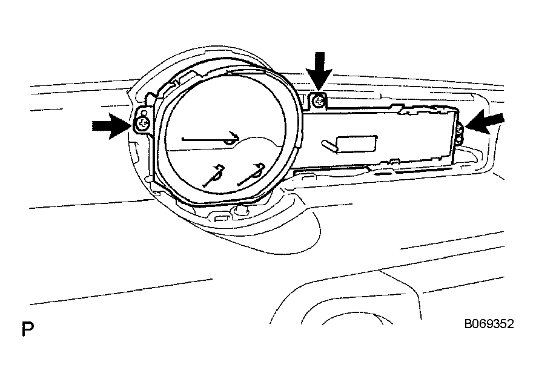
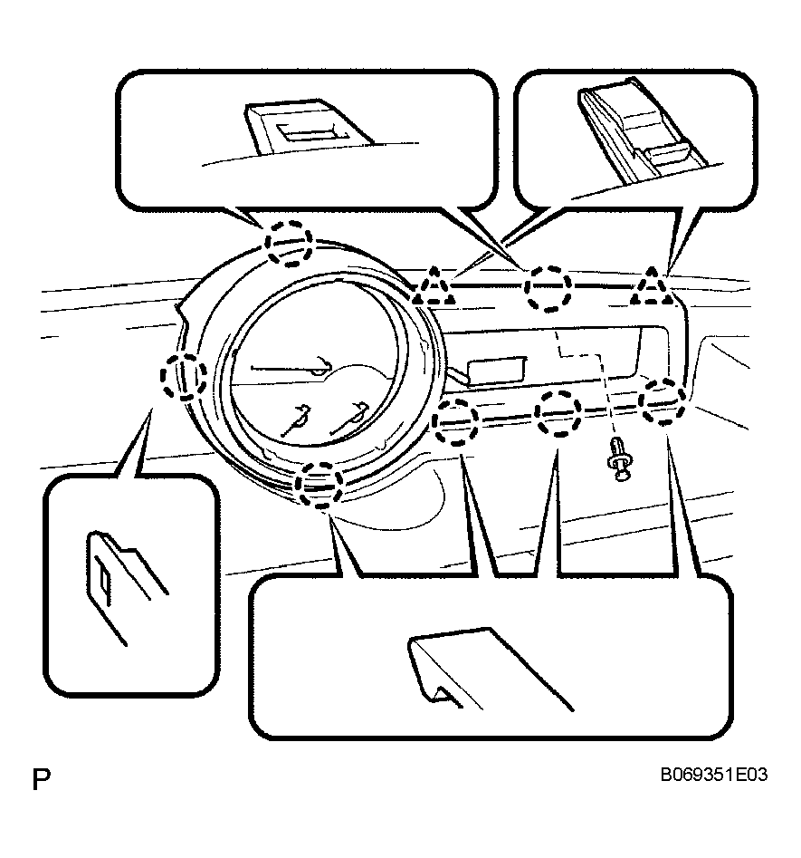

Combination Meter: Installation
- INSTALL COMBINATION METER ASSEMBLY
- Connect the connector and install the combination meter.
- Install the 3 screws.

Courtesy of © TOYOTA, LICENSE AGREEMENT TMS1002
- INSTALL INSTRUMENT CLUSTER FINISH PANEL
- Attach the 7 claws and 2 clips to install the instrument cluster finish panel.
- Install the clip.
- CONNECT CABLE TO NEGATIVE BATTERY TERMINAL
- CHECK SRS WARNING LIGHT
- Check the SRS warning light (see
PROBLEM SYMPTOMS TABLE
).

Courtesy of © TOYOTA, LICENSE AGREEMENT TMS1002